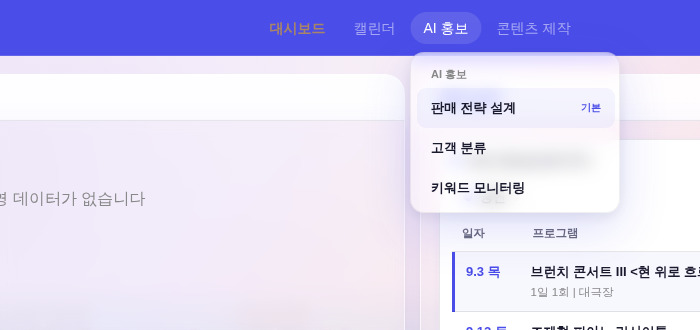
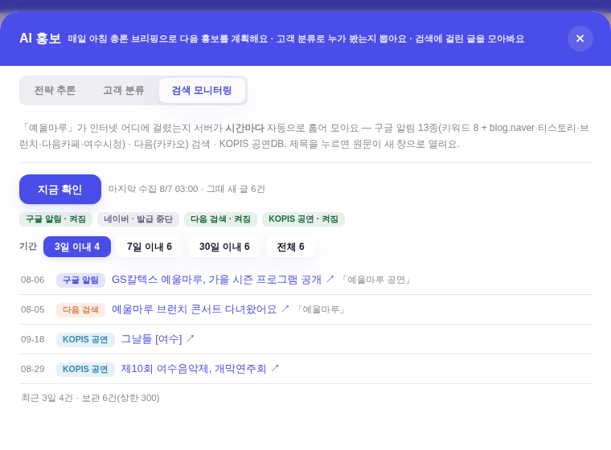
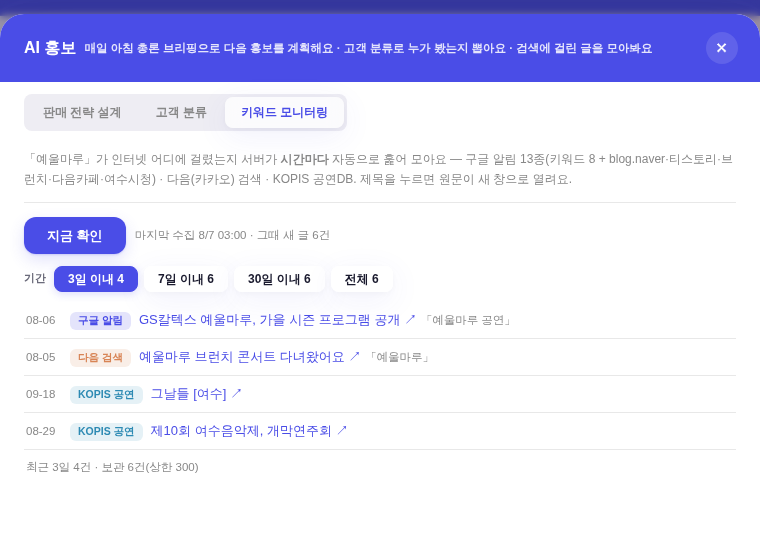

지시(운영자): 「구글 알림 다음검색 켜짐 이런거는 없애줘」 · 「ai 홍보 아래에 세부메뉴로 나눌게 — 판매 전략 설계 / 고객 분류 / 키워드 모니터링 이렇게 3개로」.
화면 = QA 진입로(?qa=admin) + 결정적 목 · 실데이터·PII 미접촉. 전(前) 화면은 origin/main의 index.html을 그대로 먹여 찍었다(작업 트리 무접촉).
전에는 AI 홍보만 세부가 없어 클릭해야 안이 보였다. 후 = 캘린더·콘텐츠 제작과 같은 드롭다운 부품·같은 항목 문법(첫 항목 「기본」 배지 포함)으로 3종이 바로 내려온다. 클릭(호버 아님)은 종전대로 기본 탭으로 열린다.

전 — 탭 「전략 추론 · 고객 분류 · 검색 모니터링」 + 갈래 칩 줄(구글 알림·켜짐 / 네이버·발급 중단 / 다음 검색·켜짐 / KOPIS 공연·켜짐)

후 — 탭 「판매 전략 설계 · 고객 분류 · 키워드 모니터링」 + 켜짐 칩 줄 삭제(기간 칩·목록은 그대로)

| 축 | 전 | 후 |
|---|---|---|
| 대메뉴 세부 | 없음(클릭해야 안이 보임) | 호버 드롭다운 3종 — 판매 전략 설계(기본) · 고객 분류 · 키워드 모니터링. 각 항목이 그 탭으로 바로 연다(openPromoCheck('ai'|'seg'|'sm')) |
| 탭 이름 | 전략 추론 · 고객 분류 · 검색 모니터링 | 판매 전략 설계 · 고객 분류 · 키워드 모니터링 — 메뉴와 탭 이름이 한 벌 |
| 갈래 준비 칩 | 「구글 알림 · 켜짐」 등 4개 상시 노출 | 삭제. 켜짐/끔은 키를 넣는 자리(Cloudflare)의 사정이지 글을 보는 화면이 매번 말할 것이 아니다 — 키가 하나도 없는 상태는 빈 화면 안내가 그대로 짚어준다(그 분기는 유지) |
| 권한 | 고객 분류 탭 = admin 전용 | 동일 — 드롭다운 항목도 같은 게이트(없는 문을 만들지 않는다). 권한 없이 'seg'로 열려 해도 기본 탭으로 떨어진다 |
["판매 전략 설계 기본","고객 분류","키워드 모니터링"].["판매 전략 설계","고객 분류","키워드 모니터링"]."구글 알림 · 켜짐 네이버 · 발급 중단 다음 검색 · 켜짐 KOPIS 공연 · 켜짐" → 후 #sm-ready 자체 없음(목록 행의 출처 배지는 어느 경로에서 온 글인지 표시라 유지).